05. Playwright E2E 검증 (real)
생성: 2026-05-19 18:19 KST
🟢 real (UCI SECOM)
1. 어설션 결과 요약
| 트랙 | 스크린샷 | 상태 |
|---|
| 트랙 ① real (5페이지) | 5/5 | ✅ |
| 트랙 ① dummy (5페이지) | 5/5 | ✅ |
| 트랙 ② 골든 패스 (5단계) | 5/5 | ✅ |
2. 트랙 ① real 스크린샷
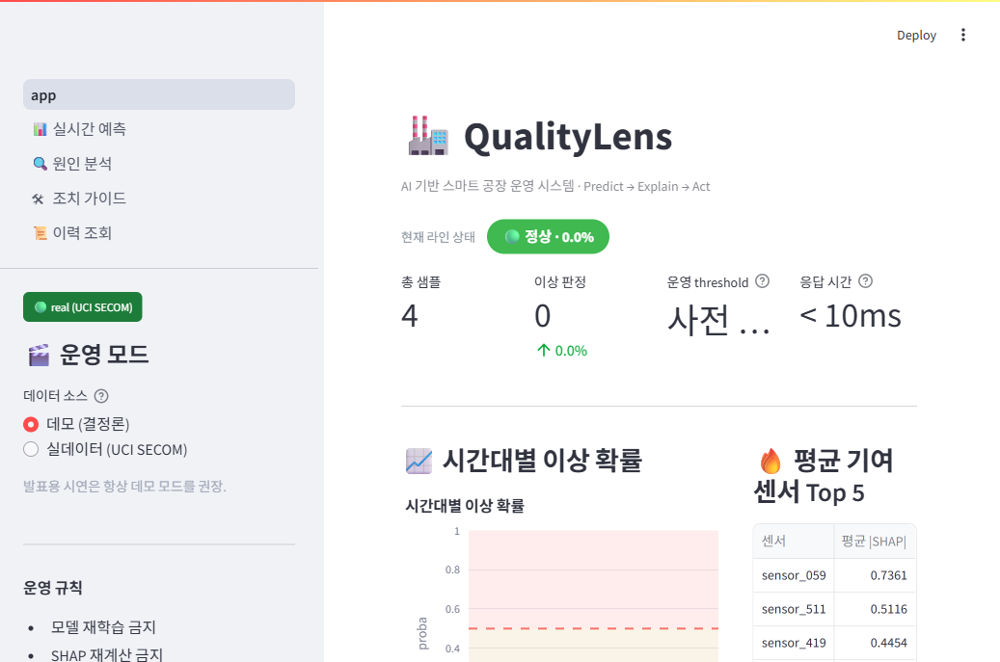
P1.png
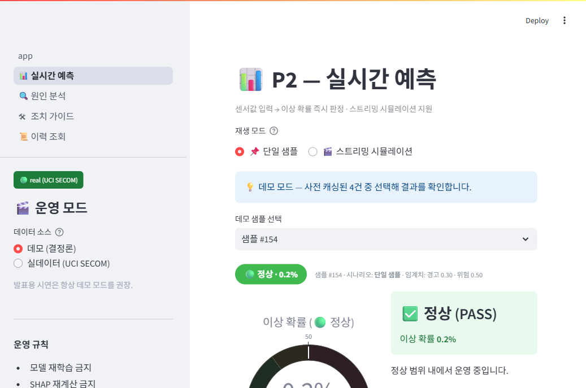
P2.png
P3.png
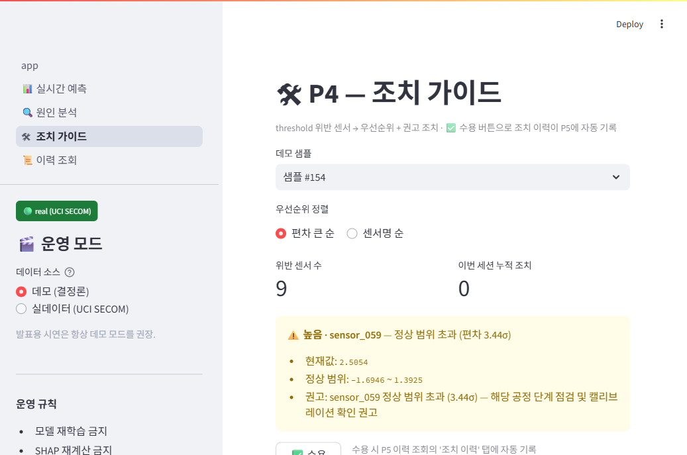
P4.png
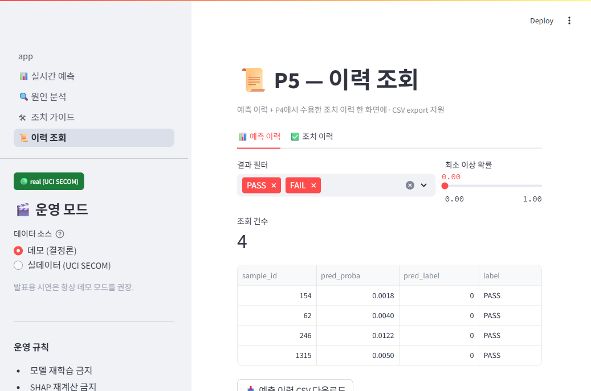
P5.png3. 트랙 ① dummy 스크린샷
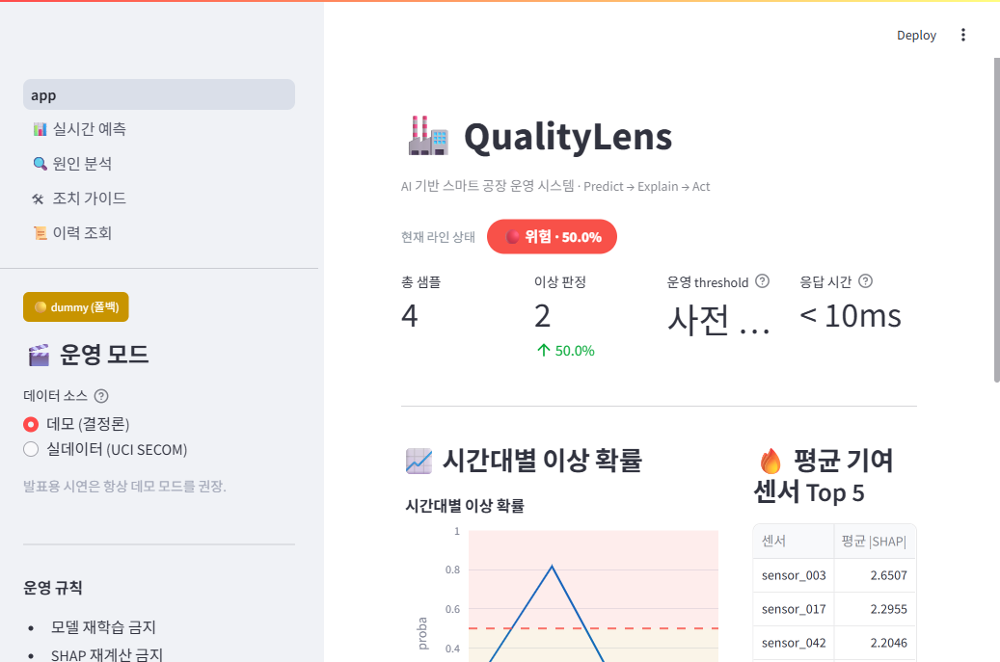
P1.png
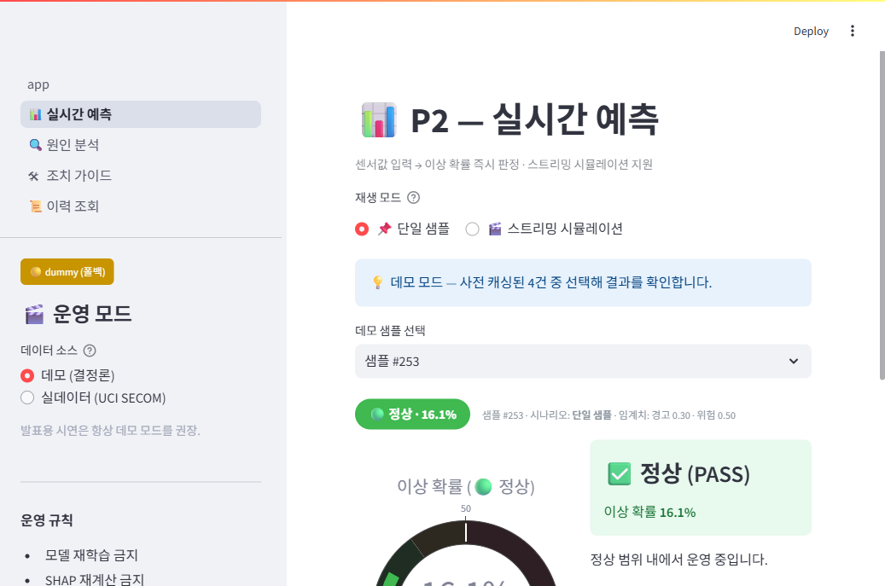
P2.png
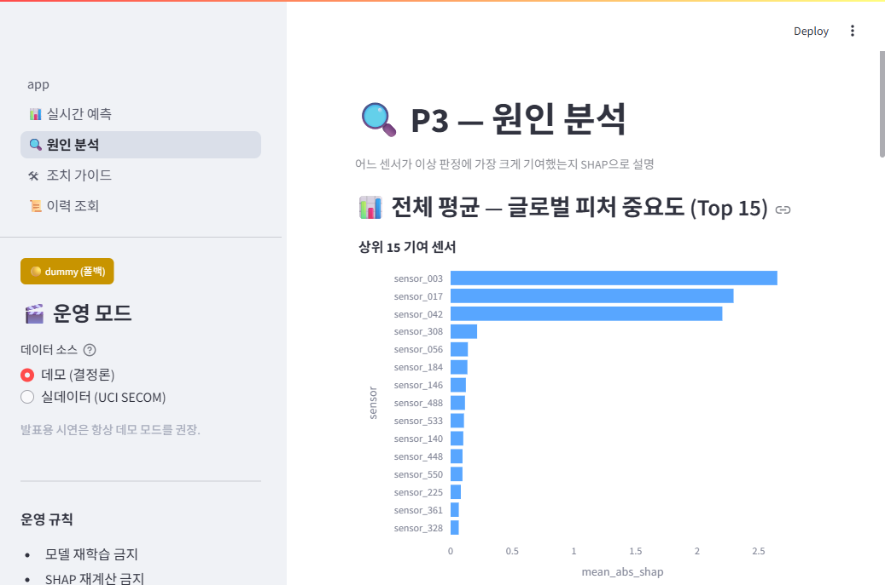
P3.png
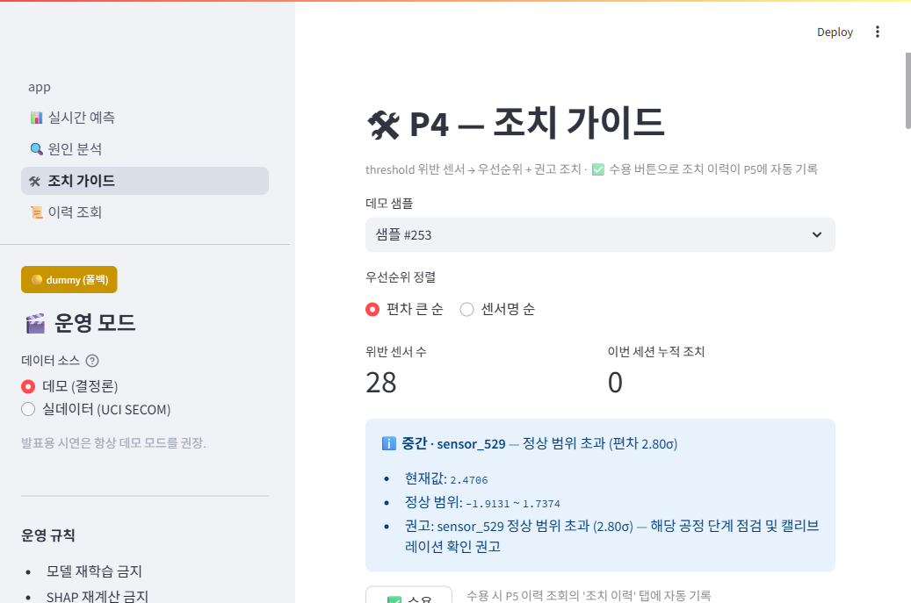
P4.png
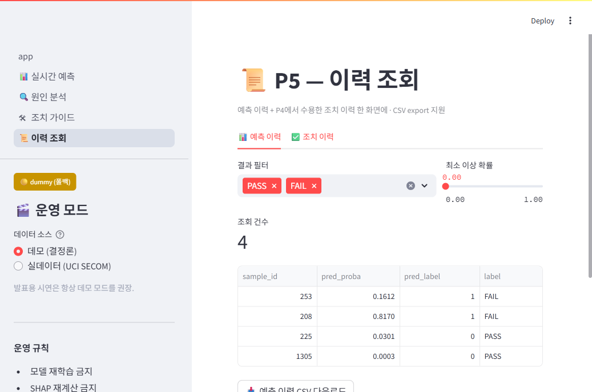
P5.png4. 트랙 ② 골든 패스 스크린샷
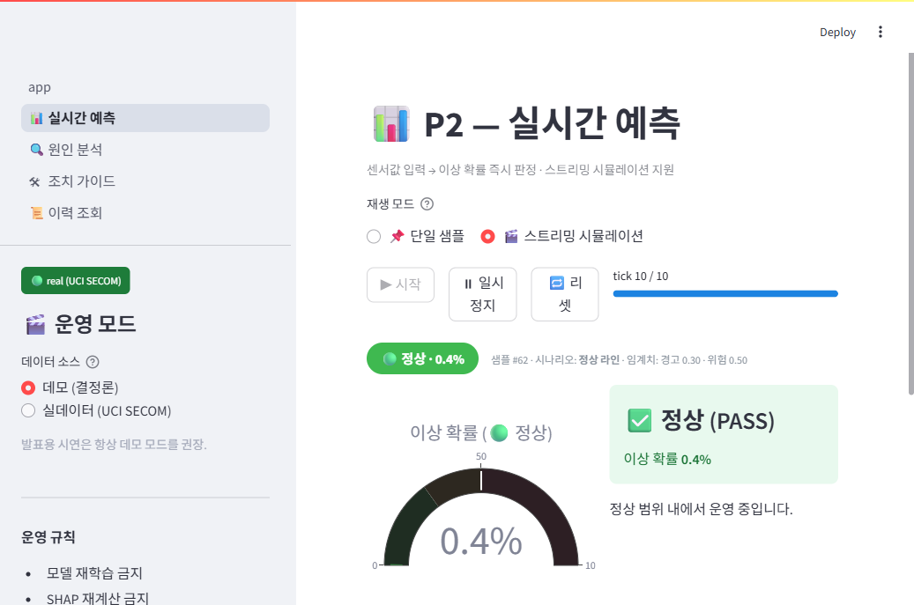
step1.png
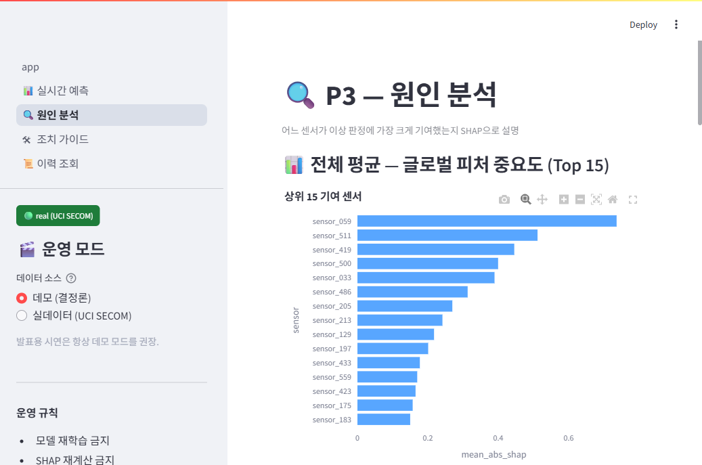
step2.png
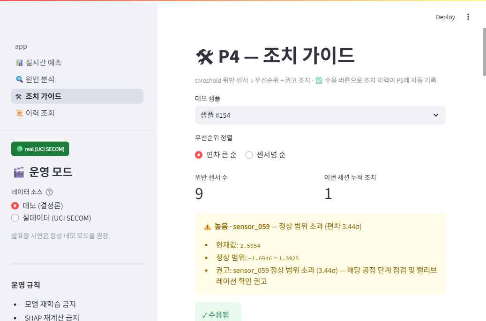
step3.png
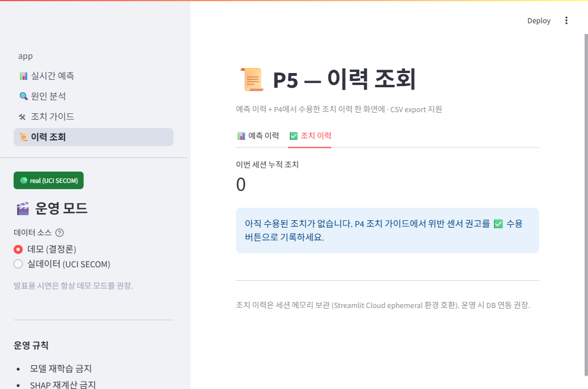
step4.png
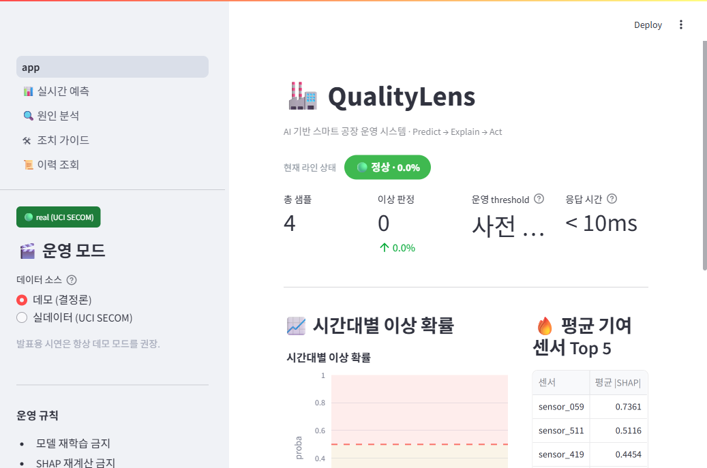
step5.png